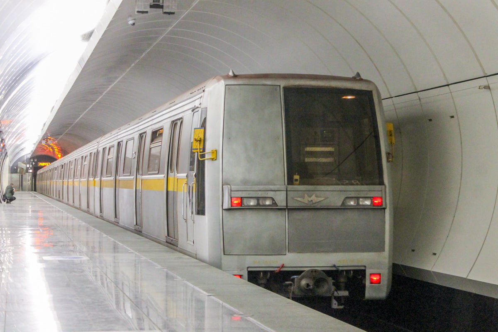
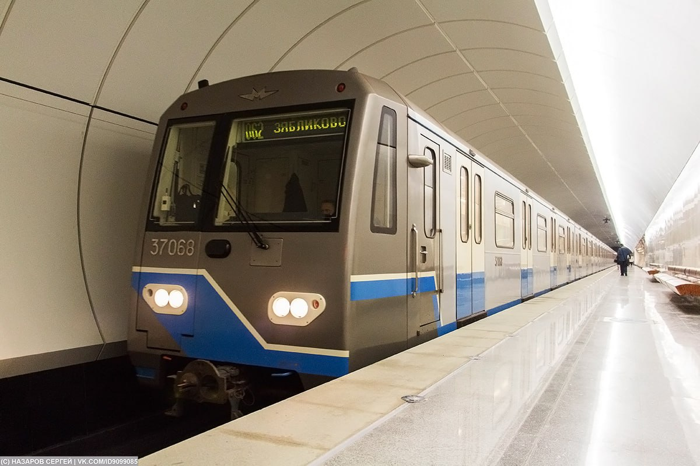

Люблинско-Дмитровская линия
Люблинско-Дмитровская линия (ЛДЛ) — десятая линия Московского метрополитена, открытая 28 декабря 1995 года. Она соединила центр города с юго-восточными и северными районами Москвы. Сегодня это одна из самых протяжённых линий столичной подземки.
На линии можно встретить уникальные экземпляры подвижного состава: вагоны с необычными элементами салона, именные поезда и редкие модификации номерных.
Общая информация
| Параметр | Значение |
|---|---|
| Дата открытия | 28 декабря 1995 года |
| Длина | 43,9 км |
| Количество станций | 26 |
| Цвет на схеме | 🟢 Салатовый |
| Первые станции | «Чкаловская» — «Волжская» (6 станций) |
| Название до 2007 | Люблинская линия |
⭐ Интересный факт: Люблинско-Дмитровская линия — первая линия, открытая в постсоветской России (28 декабря 1995 года). Она соединяет юго-восточные и северные районы Москвы.
История линии
Строительство первого участка
В конце 1980-х годов началось строительство Люблинской линии. Работы велись в сложных геологических условиях, с применением современных тоннелепроходческих щитов.
Торжественное открытие
Открыт первый участок от станции «Чкаловская» до станции «Волжская» (6 станций). Это была первая линия, открытая в постсоветской России.
Продление на юг
Линия продлена до «Марьино» (1996), «Братиславской» (1996), «Люблино» (1996). Открыты станции в спальных районах юго-востока Москвы.
Развитие центрального участка
Открыты станции «Трубная» (2007), «Сретенский бульвар» (2007), «Достоевская» (2010), «Марьина Роща» (2010). Линия продолжила развитие на север.
Продление на север
Открыты станции «Борисово» (2011), «Шипиловская» (2011), «Зябликово» (2011), «Бутырская» (2016), «Фонвизинская» (2016), «Петровско-Разумовская» (2016), «Окружная» (2018), «Верхние Лихоборы» (2018), «Селигерская» (2018).
Продление до Физтеха
Открыты станции «Яхромская», «Лианозово», «Физтех». Линия достигла северных районов Москвы.
Итог: За 30 лет Люблинско-Дмитровская линия прошла путь от 6 станций до 26 и стала одной из самых протяжённых в Московском метрополитене.
Уникальные экземпляры на линии
На Люблинско-Дмитровской линии можно встретить следующие уникальные экземпляры подвижного состава:
Элементы салона
Различные уникальные детали интерьера номерных вагонов: необычный пластик, диваны, сиденья от Яузы, старое освещение и поручни.
Подробнее →2601-2603 Моссаб трафы
Состав с новогодними трафаретами от МосСаба. Уникальное оформление, появившееся на линии.
Подробнее →81-570/571
Редкая модификация номерных вагонов. Отличаются оборудованием и элементами конструкции.
Подробнее →81-717.6/714.6
Модернизированная версия номерных вагонов с улучшенным оборудованием и дизайном.
Подробнее →Фиолетовая 81-717.6/714.6
Уникальная модификация с фиолетовой окраской или элементами дизайна. Выделяется среди других составов.
Подробнее →Табаков 0350
Именной поезд, посвящённый народному артисту СССР Олегу Табакову. Модель 81-717.5М/714.5М.
Подробнее →Если вы знаете о других уникальных составах на Люблинско-Дмитровской линии, сообщите нам!
Интересные факты
🚆 Яузы на ЛДЛ
На Люблинско-Дмитровской линии ходили поезда «Яуза». Это были одни из первых составов с асинхронным приводом, работавшие на линии.
🍆 Две «Оки» на линии
С 16 сентября 2016 года в течение двух недель на линии работали два состава «Ока»: №37067–37068 и №37305–37306.
🔬 Первая опытная «Ока» на ЛДЛ
Первая опытная «Ока» проходила испытания на Люблинско-Дмитровской линии:
- 09.06.2010 — ночная обкатка на Бутовской линии
- 19.06.2010 — участвовал в пуске станций «Достоевская» и «Марьина Роща»
- 29.06.2010 — тормозные испытания на Бутовской линии
Станции Люблинско-Дмитровской линии
Северный участок
- «Физтех»
- «Лианозово»
- «Яхромская»
- «Селигерская»
- «Верхние Лихоборы»
- «Окружная»
- «Петровско-Разумовская»
- «Фонвизинская»
- «Бутырская»
- «Марьина Роща»
Центральный участок
- «Достоевская»
- «Трубная»
- «Сретенский бульвар»
- «Чкаловская»
- «Римская»
- «Крестьянская застава»
- «Дубровка»
- «Кожуховская»
- «Печатники»
Южный участок
- «Волжская»
- «Люблино»
- «Братиславская»
- «Марьино»
- «Борисово»
- «Шипиловская»
- «Зябликово»
Фотогалерея

📷 Андрей Дем (TransPhoto)

📷 Lasselan (TransPhoto)
Нажмите на фото для увеличения
«Люблинско-Дмитровская линия — одна из самых молодых и динамично развивающихся в Московском метро. Здесь можно встретить уникальные экземпляры номерных вагонов, составы с трафаретами от МосСаба и именной поезд „Табаков“».